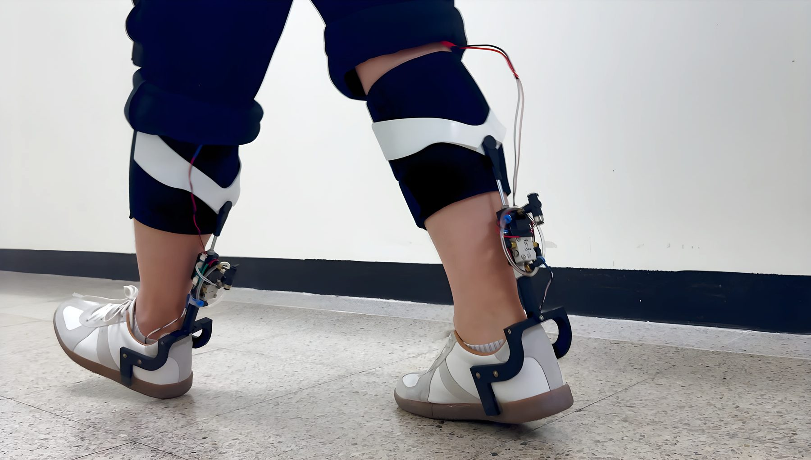
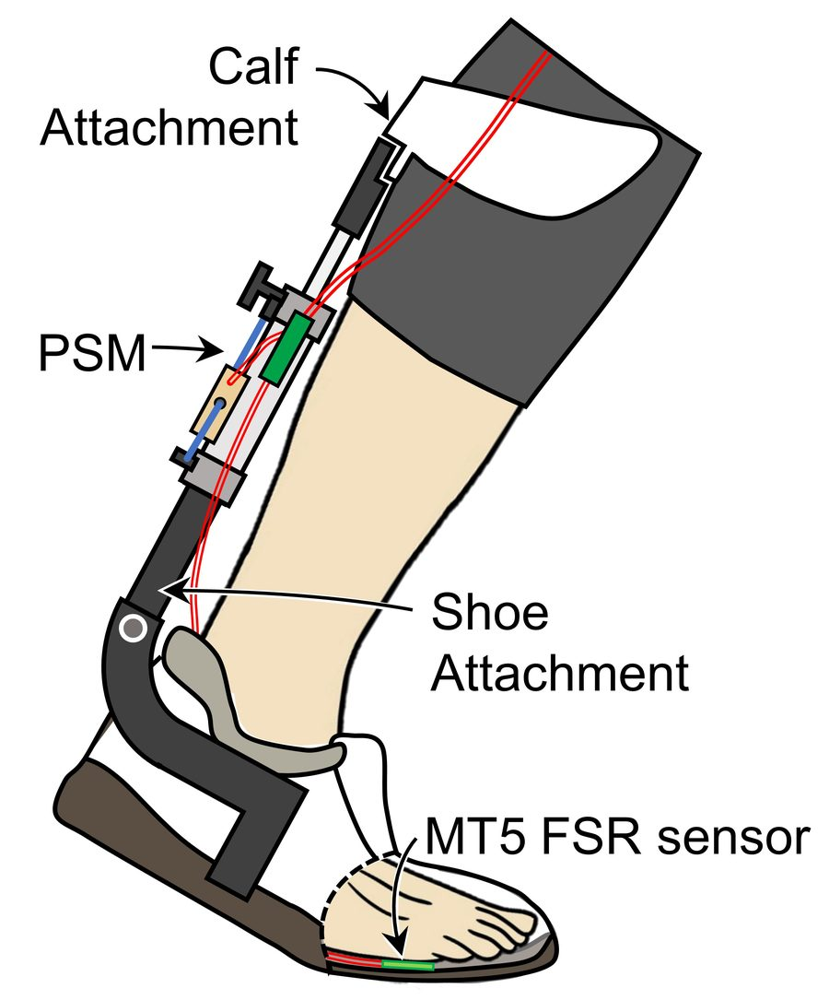
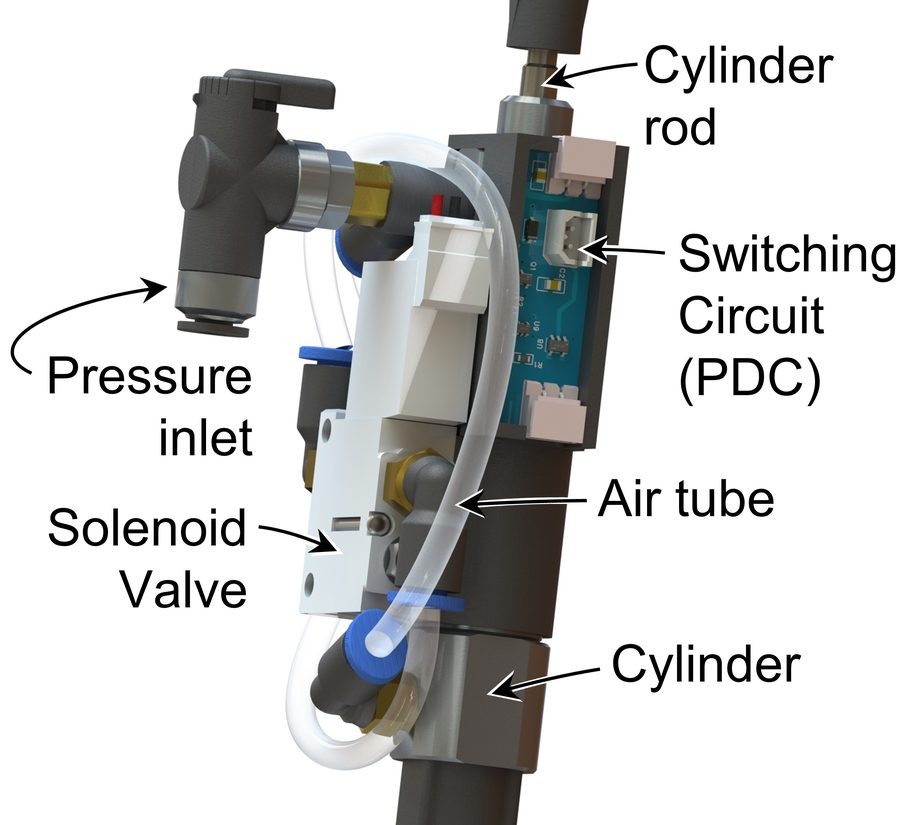
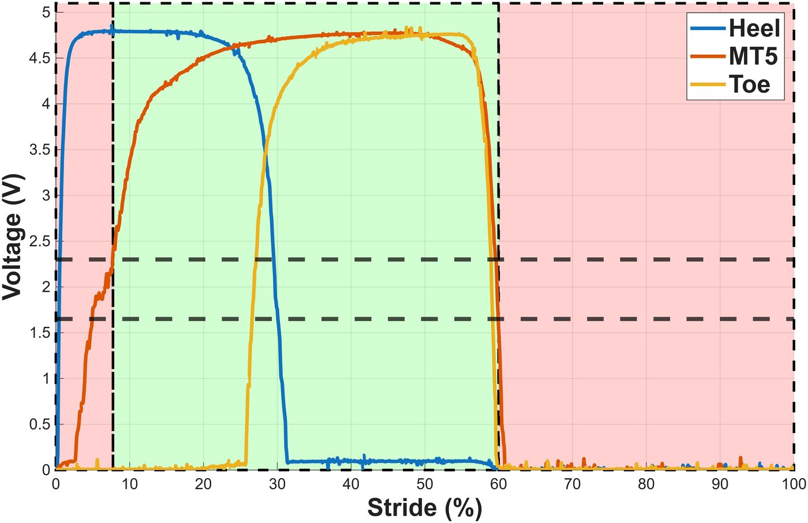
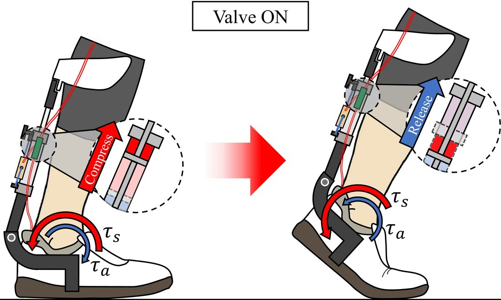
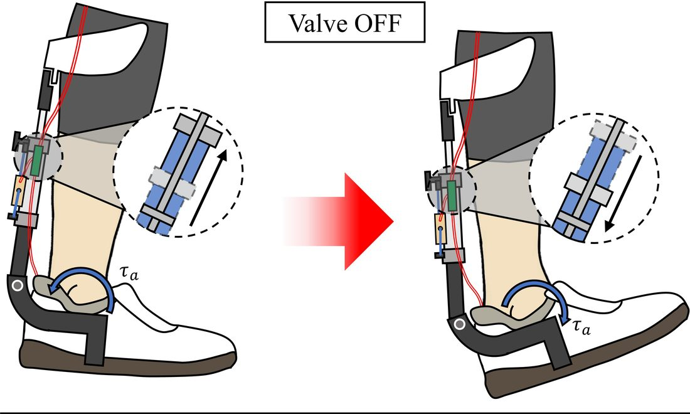
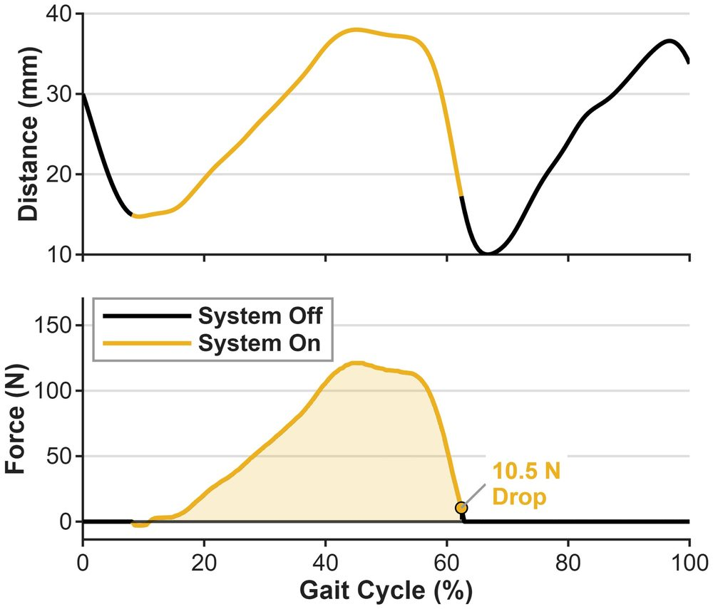
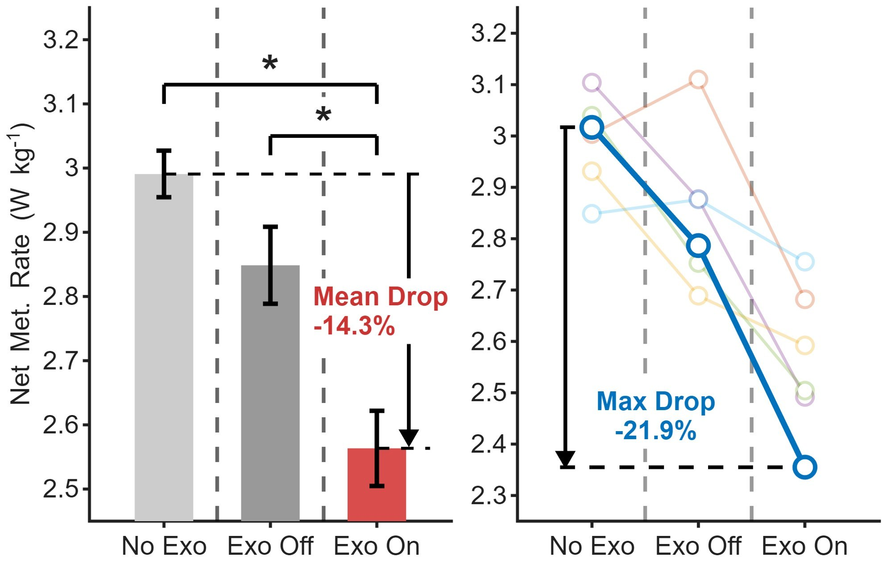

Device
A semi-passive ankle assist with no motor and no microcontroller. A pre-pressurized air cylinder behind the shin acts as a spring: a valve locks it during stance, so the ankle's own motion compresses it and gets the energy back at push-off, and opens it during swing so the ankle moves freely.

Why
Motorized ankle exoskeletons can reduce the effort of walking, but motors, gearboxes and batteries add mass that the wearer has to carry. I wanted the assistance without that cost: no motor, no digital controller, and light enough to run for hours on one battery.
A spring at the ankle only helps if it engages and releases at the right moments of the gait cycle. That timing is the control problem in this device, and it is the part I designed.
How it works


One force-sensitive resistor under the fifth metatarsal head. Its signal rises after heel contact and drops almost exactly at toe off.
A Schmitt-trigger inverter with built-in thresholds turns that voltage into an on/off signal: on above 2.30 V, off below 1.65 V. A single threshold either fired early on heel-contact noise or released before push-off ended; two thresholds fixed both. There is no microcontroller in the loop.
The signal drives the solenoid valve through a transistor. Closed, the cylinder is a spring; open, both chambers share the same air and the cylinder pushes back with no force.
Thresholds and air pressure are fixed by design and the same for every subject. Only the insole sensor's position is adjusted per subject, so that it does not start out pressed.



A semi-passive design has no motor and no digital controller, which is how it reaches 0.99 kg and runs for hours on one battery. The phase logic still had to be designed; I put it in analog hardware because the mass budget said that is where it belonged.
Result
Across six participants walking at 4 km/h, switching the device on reduced net metabolic cost by 14.3% compared with walking without it. Wearing it switched off made no measurable difference, so the saving comes from the timed spring, not from the hardware itself.


Path
For people with hemiplegia, I proposed reading the unaffected leg to assist the affected one, and built a hydraulic force sensor to measure it.
Five generations of silicone bellows with a sarcomere-inspired structure. Outstanding Paper Award, ICROS 2024. The lesson that stayed: pressure makes a structure stiff.
A wrist-worn inertial sensor timed the valve from arm swing. Published at IROS 2025 with five participants.
Gait sensing moved to the insole and the device dropped from 1.4 kg to 0.99 kg. It no longer depends on how the arms move.
At the IFAC Wearable Robot Challenge, our team tested the unaffected-leg reference on a hip exoskeleton.
Next
The same choices that made this device light also limit it. One air pressure, set before walking, fixes its stiffness; its valve switches at fixed thresholds; and it relies on the wearer's own push-off, so it cannot follow a changing gait or help people with paralysis.
I have started on the control side. In August 2026 I led our team at the IFAC Wearable Robot Challenge, where I led the implementation of a controller on a hip exoskeleton: it segments one leg's hip angle at initial contact and uses it as the position reference for the other. In a single-participant pilot the tracking error fell within one session, an early sign that the wearer was adapting to the robot. My graduate coursework was control-heavy as well (see Coursework). In a PhD I want to design the hardware and the control together, so that a light device can also adapt to the person wearing it.